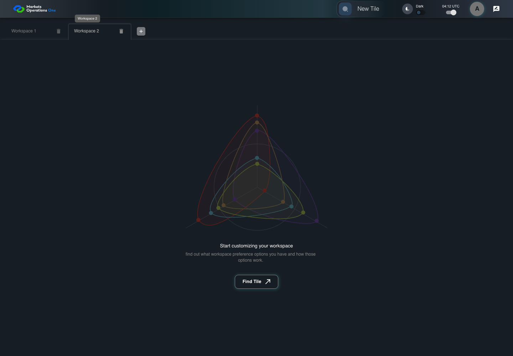

UI-SHL-003 add blank workspace after Workspace 1
PASS · application/run-001/ui-shl-003-add-blank-workspace-after-workspace-1-ab2811b77377-attempt-1 · ACTUAL_APPLICATION_LOCAL_SERVICES
Actual current React MFE; controlled accepted login response; UI-USER-01; empty W1 seeded; no real permission or BFF persistence verification.
2026-10-22T04:12:00.781Z to 2026-10-22T04:12:02.589Z
Assertions and result · Artifact manifest · Exact run inputs and source hashes
Result SHA-256:c5b42e0e139117226e4b87d5722a9d4337bb390a2c0c969aaf49599f0d53b485Screenshot capture: CAPTURED. Named frames: 3.

Workspace 1 is the only workspace before Add Workspace.
2026-10-22T04:12:01.393Z · 1440×1000Step: UI-SHL-003 Given
SHA-256:
781bb1bba145a604df44bc378f5d592a2c966c7b089cc38f14efbe58f646447d

Workspace 2 is selected, with two tabs and Find tile.
2026-10-22T04:12:02.303Z · 1440×1000Step: UI-SHL-003 Then
SHA-256:
e9c350577c0825ec37793a9a5145f12de3a0f5c7f5d062c9e527b925157bf1d5
The final visible state after the named test assertions.
2026-10-22T04:12:02.444Z · 1440×1000Step: Test source: /Users/lushevol/code/github/ratan-release-impact/workbench/e2e/audit-specs/workspaces.spec.ts:33
SHA-256:
e9c350577c0825ec37793a9a5145f12de3a0f5c7f5d062c9e527b925157bf1d5Screenshots establish visible state only. Assertions and traces support functional claims.